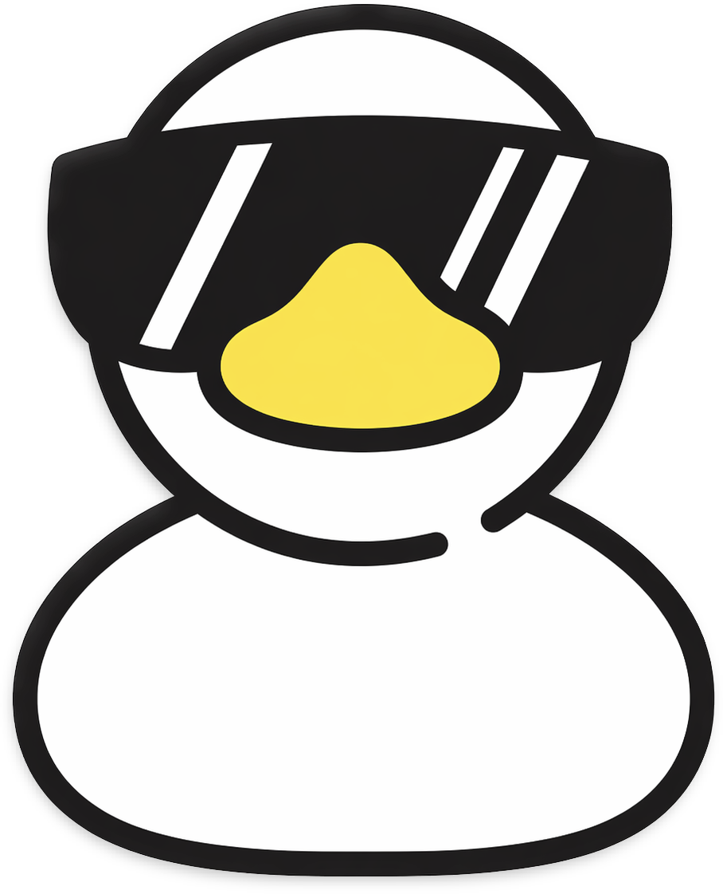

<template id="glaze-template">
  <header>
    <div class="logo-wrapper">
      <a href="/" aria-label="Go to Home Page">
        
      </a>
    </div>
    <nav class="navbar">
      <div class="hamburger-menu">
        <input
          id="menu__toggle"
          type="checkbox"
          aria-label="Toggle menu"
        />
        <label class="menu__btn" for="menu__toggle">
          <span></span>
          <span></span>
        </label>

        <ul class="menu__box">
          <li>
            <a class="menu__item" href="/" aria-label="Go to Home Page">
              
            </a>
          </li>
          <li>
            <a class="menu__item" href="/download" aria-label="Go to Download Page">
              Downloads
            </a>
          </li>
          <li>
            <a class="menu__item" href="/about" aria-label="Go to About Page">
              About
            </a>
          </li>
        </ul>
      </div>
      <ul class="navbar__items">
        <li>
          <a class="navbar__item" href="/download" aria-label="Go to Download Page">
            Downloads
          </a>
        </li>
        <li>
          <a class="navbar__item" href="/about" aria-label="Go to About Page">
            About
          </a>
        </li>
      </ul>
    </nav>
  </header>
  <div class="glaze-container contact-layout">
    <div class="glaze-content">
      <main id="glaze-main" class="glaze-main"></main>
    </div>
  </div>
  <footer>
    <a href="https://github.com/kazewaze/glaze" aria-label="Go to Glaze's GitHub Repo" target="_blank">
      
    </a>
    <p>A drizzle of boilerplate <strong>Glaze</strong>.</p>
    <a style="display: flex; justify-content: center; align-items: center; gap: 10px;" href="https://kaycee.vercel.app" aria-label="Go to kaycee.vercel.app - Kaycee Ingram's Personal Website" target="_blank">
      MIT © 2026
      
    </a>
  </footer>
</template>